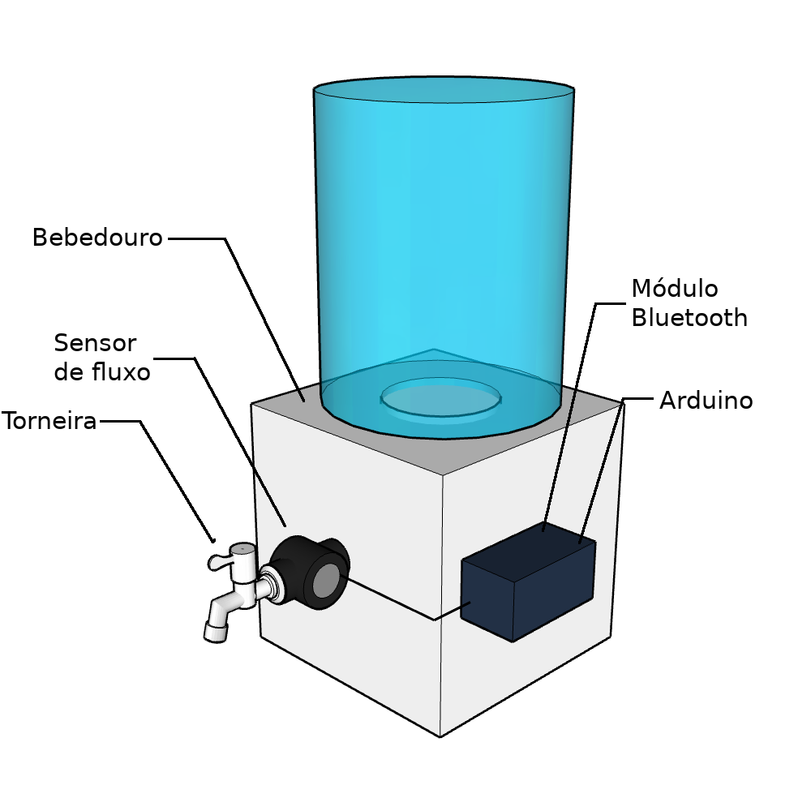
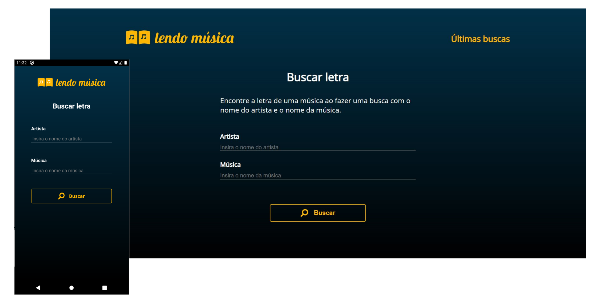

Who am I
Hello, my name is Gabriel Henrique Linke and I am studying the sixth
semester of my Computer Engineering degree at UTFPR. I am passionate about programming and I try to
improve my skills through practice and also by studying new techniques.
I currently have projects developed in C, C++ and Java, beyond Web and Mobile projects developed with
HTML, CSS, Javascript and Typescript, with technologies such as ReactJS, React native and Node.js being used in some of them.
I also enjoy working with hardware, although I still don't have much experience in that area.
I worked for a semester as a tutor for Analytical Geometry and Linear Algebra,
in addition to currently being the PO and part of the programming team of the NÓS - Nosso Olhar Solidário project.
NÓS - Nosso Olhar Solidário
This is an UTFPR extension project, where we combine technology, affection and purpose in a non-profit app.
Our mission is to be a bond between those who want to help and those who want help. For this, we disclose solidarity
actions and its needs for products and voluntary services without involving any kind of commercial transaction,
so that people willing to donate and help a cause easily find entities that are in need of this help and manage
to carry out their actions without intermediaries. Currently the app is available on Play Store and App Store
under the name Nosso Olhar Solidário. At this time it is not yet possible to make donations through the website,
however, the web-app is under development. More information can be obtained on the project's
social networks or on the website.
The Estofados Bech website is an e-commerce developed for study purposes. It is possible to purchase several
items sold by Loja e Estofados Bech, such as sofas, chairs and fabrics.
Payment is made through Mercado Pago, and the only action that needs to be done before purchase
is to create an account on the website.
Currently, the website has a demo version, with its back-end hosted on Heroku
and the front-end hosted on Netlify. To test this version you only need to access
estofadosbech.gabriellinke.dev.br.
If you want to test with an account with administrator privilege contact the developer.
An explanation of how the website works can be found in the README available on github.

This is a platform game developed in the second semester of graduation, using the SFML graphics library, as the final project of the subject Técnicas de Programação.
The main purpose of this project was learning software engineering techniques, especially object-oriented programming in C++.
It was performed a development that took into
account the usual concepts of object orientation such as Class, Object and Relationship, as well as some
advanced concepts like Abstract Class, Polymorphism, Templates, file object persistence and Standard Template Library – STL.
The code and the report are available on Github.
Water Consumption Meter (WCM)

This is a project that was made at the third semester of graduation, for the subject of
Oficina de Integração 1. Its objective is to make available to the user the amount of water ingested during the day.
For this purpose, a water dispenser was created with a water flow sensor on the outside. This sensor is
connected to an Arduino Uno that compute the water volume that has passed through
the sensor. Thus, the data can be made available via bluetooth for an Android application.
It was necessary to work with hardware, in addition to having to program in C and Java.
The code and the report are available on Github, and a video demonstrating how the project
works can be found here..

This project was developed during the Next Level Week #2, carried out by Rocketseat.
Proffy is a Web and Mobile application designed to help connect students and teachers.
Therefore, this application offers teachers the possibility to register classes, being able to add
information such as discipline, cost and schedule. It also offers students the possibility to search for registered classes.
For its development, technologies such as ReactJS, React Native, Node.js and Typescript were used.
The code is available on Github.

Lendo Música is a lyrics search engine with Web and Mobile versions. Its use is very simple:
the user just has to enter the name of the author of the song and the name of the song and press the search
button to be able to access the lyrics of the song. In addition, it is also possible to access the search history.
The Mobile version of this project was developed as a final project for the formation of programmers from the team
of the NÓS app, while the Web version was developed with the intention of practicing ReactJS.
For its development, technologies such as ReactJS, React Native and Javascript were used.
The code is available on Github.